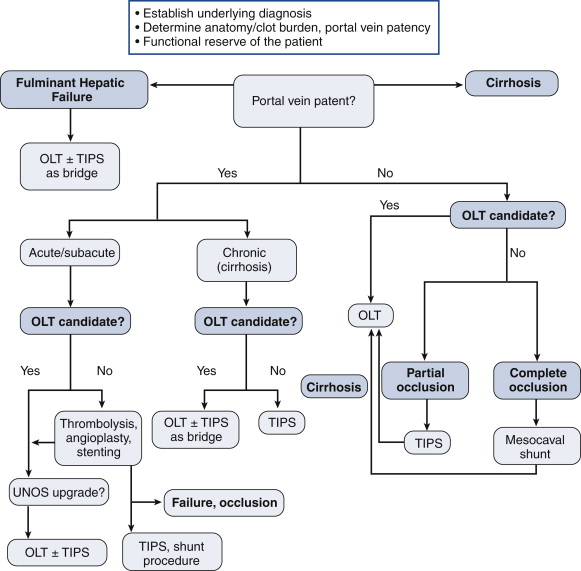

Budd
Chiari Syndrome
DEFINITION
Hepatic venous outflow occlusion, as a result of a range of possible
hypercoagulable states or anatomic abnormalities.
D E A B M I M
EPIDEMIOLOGY
Older age - higher risk
D E A B M I M
AETIOLOGY
Hypercoagulable states
Myoproliferative disorders
- e.g. polycythemia vera, essential thrombocytosis
Paroxysmal nocturnal haemoglobinuria
Factor V Leiden, antiphospholipid antibody
Deficiencies in proteins C and S
Anatomical problems
Vascular webbing and strictures
D E A B M I M
BIOLOGICAL BEHAVIOUR
Pathophysiology
Outflow obstruction
Pathology shows sinusoidal congestion, inflammation.
- progressive hepatocyte atrophy and impaired cell regeneration if
ongoing congestion.
Liver parenchyma may demonstrate characteristic regenerative nodules
- these may represent hyperplasia or adenoma
If chronic, progresses to cirrhosis and severe portal hypertension
MANIFESTATIONS
Classic triad of:
- hepatomegaly
- RUQ pain
- ascites
Can be acute or chronic
- symptom onset directly correlates with rapidity of venous outflow
obstruction
- up to 25% are asymptomatic (chronic)
D E A B M I M
INVESTIGATIONS
Doppler USS
70% sensitive, procedure of choice.
CT or MRI
Characterize outflow and can assess parenchyma and degree of ascites
- and for caudate lobe hypertrophy (see implications below)
Hepatic Venography
Gold standard though less commonly used due to invasiveness.
Can measure caval pressures and biopsy at same time.
D E A B M I M
MANAGEMENT
1. Principle is
Multimodal Treatment
Mortality rate for those untreated is extremely high
Aggressive, multidisciplinary.
- previously, surgical shunting was central; now radiologic
thrombolysis, angioplasty and stenting is central
Aim is to relieve obstruction,
symptoms and prevent recurrence
2. Aggressive Workup for
Hypercoagulable States
3. Anticoagulation
- as per cause
4. Sodium Intake and Diuresis
- as per portal hypertension
5. Invasive Procedures
- thrombolysis, TIPS, surgical shunts

Selection of Therapy
Thrombolytic therapy
Poorly studied, generally limited to incomplete occlusions
Combination of balloon, stent and TIPS may be effective adjuncts.
Shunting
TIPS can alleviate outflow
obstruction, with close follow up.
Best if performed early, high-volume centres, often as a bridge to
surgery
OLT (orthotopic liver transplant)
Transplantation may be most viable long-term option.
- but organs are not freely available
--> interventional radiology and surgical shunting provide
short-term alternatives.
Outcomes have been positively influenced by aggressive medical and
interventional therapy including anticoagulation.
- 10 year survival ~70%
Technically challenging due to swollen liver, hyperplasia of caudate
lobe makes dissection of IVC difficult, stents can cause problems
and migration.
- portal vein thrombosis is a difficult problem and requires a plan
(see algorithm).
Recurrent Disease
In up to 10%, often years later.
Lifelong anticoagulation to prevent.
Occasionally retransplantation may even be required.
D E A B M I M
REFERENCES
Cameron 10th